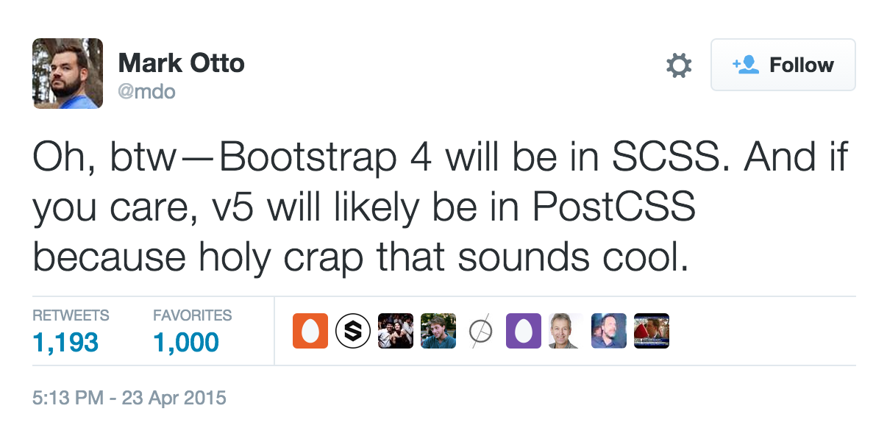

NCDevCon 2015 Notes
Bootstrap, Chrome Toolbox and JS Promises
Pete Lombardo / pete.lombardo@jhu.edu
Part 1: Don't Get BootstrappedDown
Reading the Fine Print on Responsive Frameworks
To paraphrase Jeremy Keith:
The web has always been responsive…right up until developers and designers came along and broke it.
The web was "broken"
for a really long time.
Almost every website in 2005:
.container {
width: 960px;
}Most sites went one of two directions:
- They did nothing.
- They built a separate mobile site, and routed traffic using device or user agent sniffing (yuck).
Then, in 2010...
Ethan Marcotte coined the phrase "responsive Web Design"
- "One codebase to rule them all"
- Fluid grids based on proportionate sizes and relative units
- Flexible images
- Media queries to detect and respond to the device’s viewport dimensions
- Also brought more prominence to the concepts of "mobile first" and progressive enhancement
In other words, even with smartphones IN THEIR HANDS, it took developers three years to go from this:
.container {
width: 960px;
}To this:
.container {
max-width: 960px;
}A bit about Frameworks...
OMG frameworks have everything!!!

We should use them for every site ever!!! (or NOT)
Yeah…don't.
- Before you decide to use a responsive framework, ask yourself two questions:
- Does the value it provides outweigh its potential pitfalls? (see Clones ahead)
- Am I asking my end users to shoulder the burden of conveniences during development?
????
Attack of the Clones
Attack of the Clones
"Creates a consistent design language and coding style."

Attack of the Clones
"Creates a consistent design language and coding style."

Attack of the Clones
"Creates a consistent design language and coding style."

Attack of the Clones
"Creates a consistent design language and coding style."

Attack of the Clones
"Creates a consistent design language and coding style."
Maybe a little too consistent?
Attack of the Clones
What to do differently:
- Try to customize the built-in components as much as possible to avoid looking like every other Bootstrap site on the planet.
The Right Tool for the job
- Certain tools are better for certain situations than others.
- A tool that can do everything pretty well isn't always better than a tool that can do one thing really well.
- (agreed)
HOWEVER:
Next few slides are maintained for discussion. I personally disagree with the author.
The Right Tool for the job

The Right Tool for the job

What about CDN's?
no answer.
Choose Your Framework Like
You'd Choose Your Spouse
Choose Your Framework Like
You'd Choose Your Spouse

Choose Your Framework Like
You'd Choose Your Spouse

Choose Your Framework Like
You'd Choose Your Spouse

Perhaps more importantly, what
happens when your framework itself is refactored?
Choose Your Framework Like
You'd Choose Your Spouse
Bootstrap 1/2:
<div class="row">
<div class="span4">...</div>
<div class="span8">...</div>
</div>Choose Your Framework Like
You'd Choose Your Spouse
Bootstrap 3:
<div class="row">
<div class="col-xs-6 col-md-4">...</div>
<div class="col-xs-12 col-sm-6 col-md-8">...</div>
</div>Choose Your Framework Like
You'd Choose Your Spouse

"Bootstrap Bankruptcy"
"The point at which the value gained from the custom interface is less than the effort required to refactor Bootstrap and implement the new interface." - Matthew Copeland
Choose Your Framework Like
You'd Choose Your Spouse
What to do differently:
- Architect your application today like your framework will change tomorrow.
- If you're using a preprocessor like SASS or LESS, consider extending Bootstrap, rather than using its provided classes.
- This keeps your classes more semantic and human-readable, and you're not quite as locked into the framework if things go wrong.
Choose Your Framework Like
You'd Choose Your Spouse
What to do differently:

Chrome DevTools
Jared Siirila
Chrome Channels
| Channel | Description | |
|---|---|---|
 |
Stable | Standard released version. Major updates every 6 weeks. |
|
Beta | One step ahead of stable. Major updates every 6 weeks. |
|
Dev | First tested version. Updated 2-3 times per week. |
 |
Canary | Bleeding edge. Released daily. Untested and could be broken. |
Design
drop
elements
drag
and
to
rearrange
When editing almost any string containing a number in the Elements panel, the arrow keys can be used to increment/decrement the value
This works in suprising places, such as on Hex values
Hold the shift key to increment/decrement by 10 with the arrow keys
Hold the alt key to increment/decrement by .1 with the arrow keys
Color Picker
When using the color picker:
- click the color box,
- then click the page
- if you move the mouse over the page a magnifying glass will appear that allows you to pick a specific pixel’s color
Shift+click on a color in the sidebar to switch between color formats (rgb, hex, hsl)
Select colors from the site's color palate
Media Queries
Development
Tired of your mouse slowing you down?
You should try...
Keyboard Shortcuts
Navigate the DOM in the Elements panel using arrow keys
| Mac | Windows | Action |
|---|---|---|
| Esc | Esc | Shows/hides the console |
| Mac | Windows | Action |
|---|---|---|
| Ctrl + G | Ctrl + G | Jump to a specific line number in the current file. |
Can also be done using the Search for file by name dialog by putting a : at the start
| Mac | Windows | Action |
|---|---|---|
| Cmd + opt + C | Ctrl + Shift + C | Toggle into inspect element mode when in the browser window. |
Useful to inspect elements that are hidden when the mouse moves out of them
| Mac | Windows | Action |
|---|---|---|
| Cmd + Shift + O | Ctrl + Shift + O | List and search functions in current file |
| Mac | Windows | Action |
|---|---|---|
| Cmd + Shift + D | Ctrl + Shift + D | Dock/Undock the DevTools with the browser window |
Did your DOM change and you can't find what caused it?
Tired of searching through code looking for the culprit?
DOM Breakpoints
Breakpoints for DOM tree modifications including attribute changes and element removal.
Other Useful functions in the Console
Not in the console object
These only exists inside the console!
$()
$$()
Aliases for document.querySelector() and document.querySelectorAll() respectively.
copy()
Copies whatever element is passsed into it to the clipboard
monitor(function)
When the specified function is called, a message is logged with the method name and arguments to the method.
monitorEvents(object,[events])
When one of the specified events occurs on the object, log the event object to the console.
Workspaces
Performance
and
Debugging
Preserve Log
Keeps the log between full page navigation. An option exists for this in both the Network panel and the Console
XHR Instant Replay!
Right click on any XHR request in the Network panel to have the option to replay that request
Show/Hide columns in the Network Panel
Rewind Debugger
When debugging code, rerun the code in the any frame in the Call Stack by right clicking the frame and selecting to Restart Frame
Conditional Breakpoints
Tired of having sequential messages stacked in the Console?
Enable "Show timestamps" in the Settings
Snippets
The Sources panel allows you to create, store, and run snippets of JavaScript
Store useful utilities
Grep
Attaches a Grep method to the Object prototype
jQuerify
Add jQuery to a page that doesn't have it
Log Globals
Find leaked globals
More snippets can be found at:
https://github.com/paulirish/devtools-addons/wiki/Snippets
Timeline Panel Screenshots
Call now, and we'll double the offer!
555-867-5309
Network Panel Screenshots
Network panel filters
Many different filters such as larger-than and domain
Chrome will autocomplete the filters applicable to your data, so play around
Timeline panel


But Wait, There's More!
DevTools all the way down
The DevTools themselves are a web app that can be edited by opening DevTools on them if they are undocked!
Enable DevTools Experiments